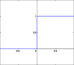
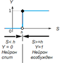
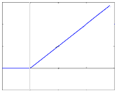
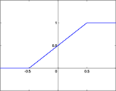
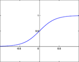
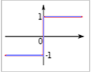

Лекция 38. Нейроны. Что это такое? Первое знакомство
В 1943 году исследователи Мак-Каллок и Питтс предложили дискретную математическую модель нейрона, как основы устройства нашего мозга, «элементарной единицы психической
деятельности» (психон). Хотя ещё Г.В. Лейбниц пытался представить человеческое знание при помощи универсального символьного языка, однако известный нам современный вариант
модели нейрона предложил Розенблатт в 1957 году.
Дискретная модель нейрона является наиболее широко используемой на практике, так как достаточно проста для расчётов и одновременно вполне адекватно отражает
работу нейрона. Для более детального моделирования процессов, происходящих в нейроне и нейросети, есть динамические модели Ходжкина-Хаксли, Амосова и другие.
Нейроны в модели упрощенно рассматриваются как устройства, оперирующие двоичными числами, и удобны для построения сети из «нейронов», совокупность которых может выполнять числовые или логические операции большой сложности.
Перечислим основные особенности нейрона, представленные в его модели:
1. Нейрон может находиться в двух состояниях: 0 или 1, то есть 0 – не возбуждён, 1 – возбуждён. Если нейрон возбуждён, то на его выходе поддерживается сигнал 1, если не возбуждён – 0.
2. Внутри сам нейрон состоит из двух частей: сумматора и активационной функции, соединенных последовательно.
На технических схемах нейрон обозначается кружком (вершиной графа), а связи нейронов – стрелками (связями в графе). На связях указывается вес k каждой из них. В кружке указывается значение порога срабатывания нейрона.
Нейронная сеть представляется графом.
3. Задача сумматора – получить сигналыX от других нейронов, приходящих к данному нейрону по его входным связям, умножить каждый из них на
соответствующее число (k - вес связи) и сложить эти сигналы в общую сумму S по формуле:
S = k1x1+ k2x2+ … + kxi+ … + knxn.
Здесь, i – номер входной связи. То есть, S(X) - линейная функция.
4. Задача активационной функции - нелинейно преобразовать суммарный сигнал S в единственный выходной сигнал нейрона Y: Y=f(S).
Y является состоянием нейрона и одновременно удерживаемым им его выходным сигналом. Пока состояние Y нейрона не изменится, не изменится и его выходной сигнал.
Исследователи рассматривают несколько видов функции Y=f(S): ступенчатая, линейчатая (max(0,x) или ReLu), смешанная, сигмоидальная,
sign - знак числа. Выбор активационной функции влияет на точность расчётов нейронной сети, наиболее «физичная» из них - сигмоидальная.
Активационной функция называется потому, что она «решает», возбудится ли нейрон от суммы входных сигналов или нет. Нейрон возбудится (Y=1), если сумма входных
сигналов с учётом весов их связей S окажется больше или равна h. Если сумма S окажется меньше h, то нейрон молчит, не возбуждается
(Y=0). Величина h называется порогом возбуждения. Если сумма входных сигналов преодолела порог, то на выходе нейрона появляется 1, если не
преодолела – то 0.
Ступенчатая функция имеет вид: Y=one(k1x1 + k2x2 + … + kxi + … + knxn- h),
как запишет математик, используя функцию Хэвисайда one. Программист на языке СИ++ запишет тоже самое как :
Y=1*(k1x1 + k2x2 + … + kxi + … + knxn >= h) + 0*(k1x1 + k2x2 + … + kxi + … + knxn < h),
где запись означает, что неравенство возвращает 1, если оно выполняется, или возвращает 0, если не выполняется. Или еще проще: Y=(k1x1 + k2x2 + … + kxi + … + knxn >= h).






Виды активационных функций. Активационная функция представляет собой простейшую нелинейность – скачок,
единичную функцию. Слева направо:
единичная функция Хэвисайда,
она же со сдвигом аргумента на величину порога нейрона,
линейчатая,
смешанная,
сигмоидальная,
sign – знак числа.
Если какой-то нейрон получит сигналы сразу от множества параллельных нейронов, то на его входе получится сумма нескольких сигналов от элементарных функций активации Y=f(X). Нейроны, расположенные последовательно, дают возможность чередовать линейную функцию и простейшую (единичную) нелинейную функцию. Эти два механизма объясняют универсальность и высокую гибкость нейронных сетей при моделировании окружающего нас мира, которые могут реализовать по своей сути функцию почти любой сложности.
Пример:
На вход нейрона подадим сигналы: X1=1, X2=1, X3=0. Тогда в сумме с учётом входных сигналов и весов связей получится: S = X1*k1+X2*k2+X3*k3 = 1*(-2) + 1*4 + 0*2 = -2+4+0 = 2. Так как, S=2, h=3, то S<h и нейрон «спит», не возбуждается.
На выходе нейрона Y=0.
На вход нейрона подадим сигналы: X1=0, X2=1, X3=1. Тогда в сумме с учётом входных сигналов и весов связей получится: S = X1*k1+X2*k2+X3*k3 = 0*(-2) + 1*4 + 1*2 = 0+4+2 = 6. Так как S=6, h=3, то S>h и нейрон возбужден. На выходе нейрона Y=1.
Разумеется, могут быть и другие наборы входных данных.
На графиках по оси абсцисс отложена переменная S, по оси ординат – переменная Y. Таким образом, активационная функция «передаёт» сигнал с входа на выход,
поэтому её часто ещё называют передаточной функцией. Наиболее часто в качестве активационной функции используют ступенчатую функцию, которая в инженерии называется
«функцией Хэвисайда» или единичной функцией Y=one(S).
Порог h может принимать любое значение и настраивается в дальнейшем самой сетью. Порог h сдвигает функцию Y(S(X)) по горизонтальной оси (влево-вправо)
на величину его значения.
График единичной функции Хэвисайда с положительным значением порога h>0
Теперь для активационной функции первого типа можно математически записать:
В программировании модель нейрона имеет вид условного оператора:
S := k1x1 + k2x2 + … + kxi + … + knxn
if (S >= h) then Y:=1 else Y:=0.
Совсем по-программистски (язык СИ++): Y:=1*(S >= h)+0*(S < h) или сокращенно: Y:=(S >= h).
Или собирая все вместе в одну строку: Y = ((k1*x1+k2*x2+k3*x3-h)>=0).
ВАЖНО! В последней записи, перенеся значение порога h в левую часть неравенства, можно заметить, что h играет роль такого же входного сигнала,
как и любой xi. В последних версиях нейросетей h объявляют таким же входным сигналом, как и x, а порог ставят равным нулю всегда.
Так открывается возможность единообразно управлять порогами нейронов сети (логикой сети). Математическая запись унифицируется, исчезает необходимость вводить лишнюю
сущность (порог).
5. Связи. Далее нейроны объединяют в нейронные сети путём передачи сигналов с выходов Y каждого из них на определённые входы X других с помощью связей.
Связь изображается линией, соединяющей нейроны. Связи бывают возбуждающие (k > 0) и тормозные (k < 0). Если связь разорвана, то коэффициент k=0.
Один выходной сигнал Y может транслироваться на любое количество входов X других нейронов. Конкретные конфигурации соединений задают конкретную сеть.
Конфигурация всей сети задаётся схемой или (в компьютере) матрицей коэффициентов k, в которой указаны их значения. Квадратная матрица связей сети при этом имеет
размер, совпадающий в количеством нейронов сети, которые последовательно пронумерованы.
Принято изображать сеть, упорядочивая нейроны слоями.
6. Потерь уровня сигнала при его раздаче от одного ко многим не происходит. Переход сигнала от нейрона к нейрону происходит за один такт, то есть имеет задержку
«единица». Если удерживать входные сигналы в нейронной сети постоянными, то через некоторое время в сети устанавливается постоянство всех состояний и сигналов.
(Здесь имеется в виду сеть без обратных связей).
7. Самые первые нейроны в сети - рецепторы (сенсоры, датчики) - получают информационные сигналы из окружающей среды, передавая их интернейронам. Существуют рецепторы
шести типов: механорецепторы, электрорецепторы, хеморецепторы, фоторецепторы, терморецепторы, осморецепторы. На выходе сети находятся выходные нейроны: эффекторы или
мотонейроны, они прикрепляются к мышцам и заставляют их сокращаться, выполняя команды нейросети.